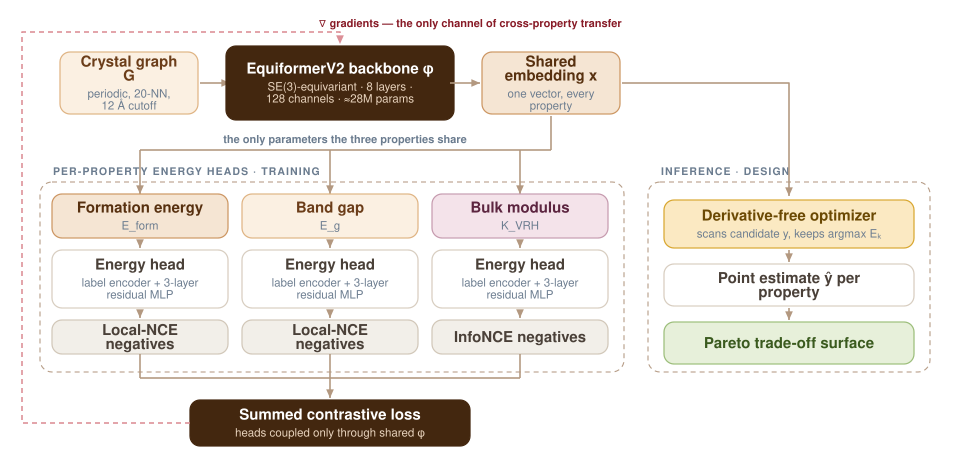

MEX-Multi — Designing for Three Properties at Once
Materials design is never a single-objective problem. Thermodynamic stability, electronic band gap and mechanical stiffness pull against one another, so what a designer actually needs is not one optimum but the trade-off surface between them. MEX-Multi learns all three inside one shared representation and returns that surface directly.

Why a single number is the wrong answer
Ask for a material that is stable and has a 2 eV band gap and is stiff, and you have asked for something that may not exist. The honest answer is a set of compromises: the structures for which you cannot improve one property without giving up another. That set is the Pareto front, and producing it requires a model that reasons about the properties jointly rather than three models that have never met.
There is a second problem. Novel materials live at the edges of a training distribution, which is exactly where regression models become least trustworthy. Both problems pushed the design toward training directly in a joint multi-property space.
How the framework is put together
- One shared backbone. An SE(3)-equivariant EquiformerV2 (8 layers, lmax = 4, 128 spherical channels, 20-nearest-neighbour edges inside a 12 Å cutoff, roughly 28M parameters) maps each periodic crystal graph to a single embedding.
- An energy head per property. Instead of regressing a value, each property gets an energy-based model: a label encoder embeds a candidate value, that embedding is concatenated with the shared crystal embedding, and a three-layer residual MLP scores the pair. No property value ever enters the shared embedding.
- Contrastive training, tuned per property. Heads are trained to raise the score of the true value against negatives — locally sampled Gaussian-mixture negatives for the narrow-range formation energy and band gap, uniformly drawn negatives spanning the full range for bulk modulus.
- One summed loss. The per-property losses are summed, so the three objectives meet only in the gradients that reach the shared backbone.
- Derivative-free inference. At evaluation time a derivative-free optimizer scans candidate values and keeps the one each head scores highest, yielding a point estimate and, across the test set, the structure-level Pareto front.
Isolating where the gain comes from
An accuracy number on its own would not show that joint training is what produces it — extra capacity could explain the same result. So the comparison against single-property baselines holds everything else fixed: identical backbone, identical heads, identical losses, identical data splits. Only the number of simultaneous objectives changes.
Under that controlled comparison, joint multi-property training improved every metric for every property, cutting MAE by 68%, 42% and 59% respectively. That isolates transfer through the shared representation, rather than added capacity, as the source of the gain.
What it means in practice
The model-derived trade-off surface lines up with the front computed from the true, DFT-measured properties of the same test structures. A designer can therefore read candidate compromises off the model instead of running the calculations that would otherwise be needed to find them.
Evaluation
MEX-Multi was evaluated on mp20_5k, a 5,000-structure subset of the Materials Project MP-20 dataset, across three simultaneous targets: formation energy, band gap and the Voigt–Reuss–Hill bulk modulus. Results are reported as mean and standard deviation over three training seeds, with Spearman rank correlations of 0.957, 0.716 and 0.969.